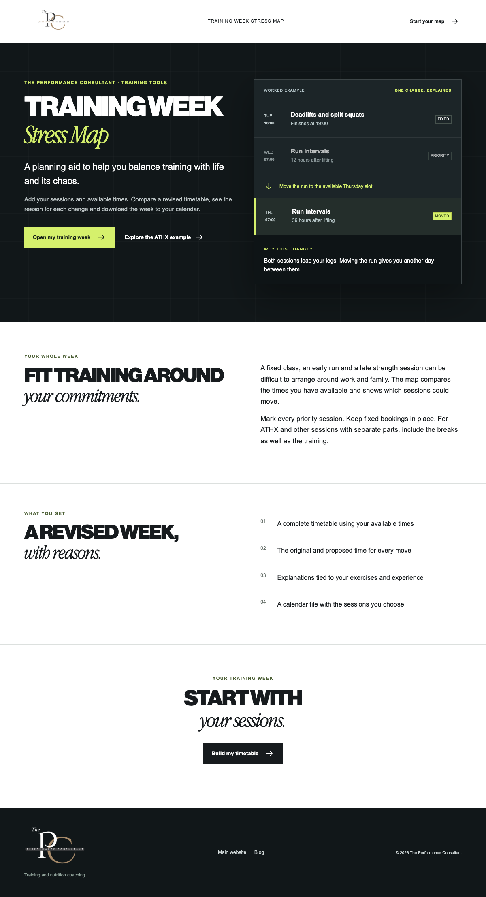
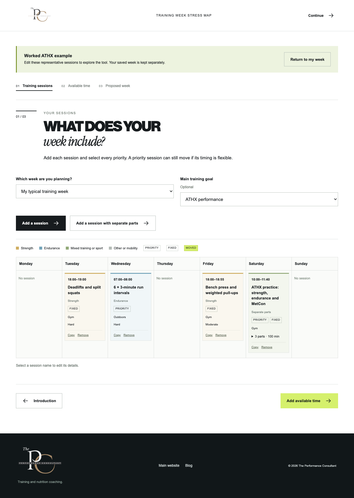
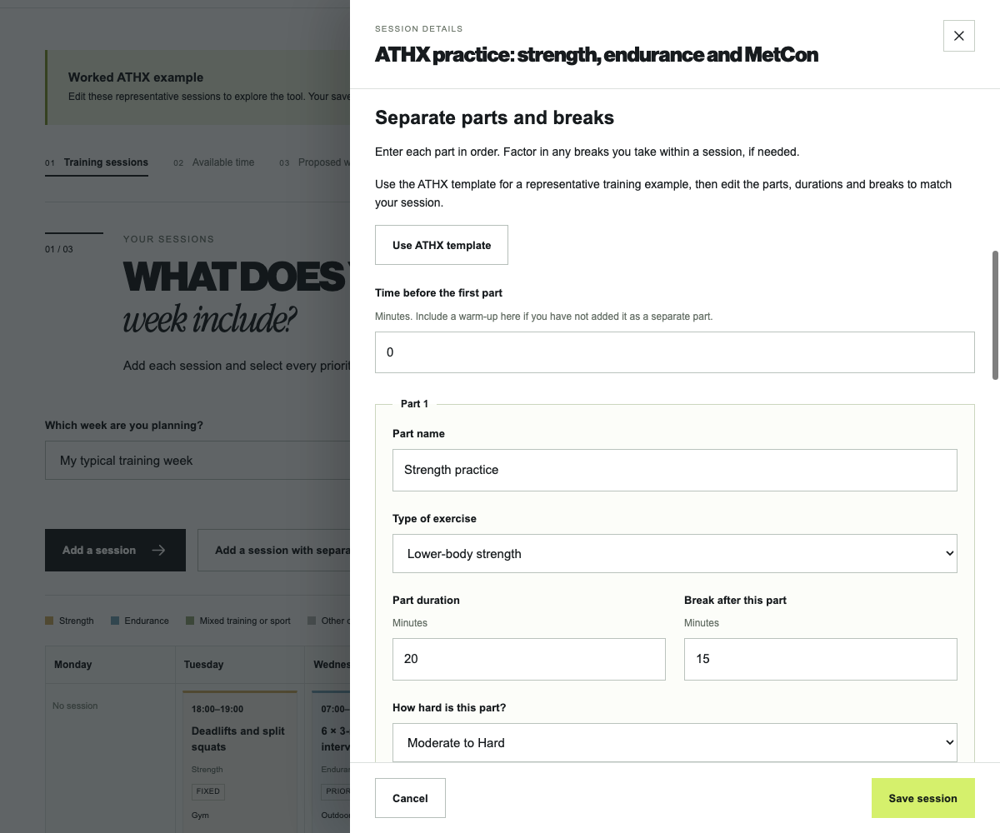
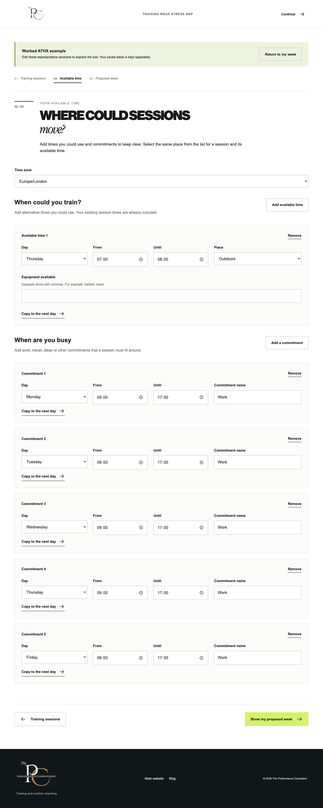
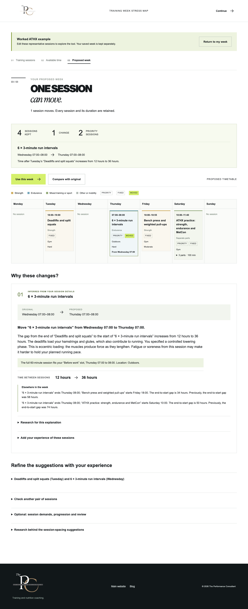
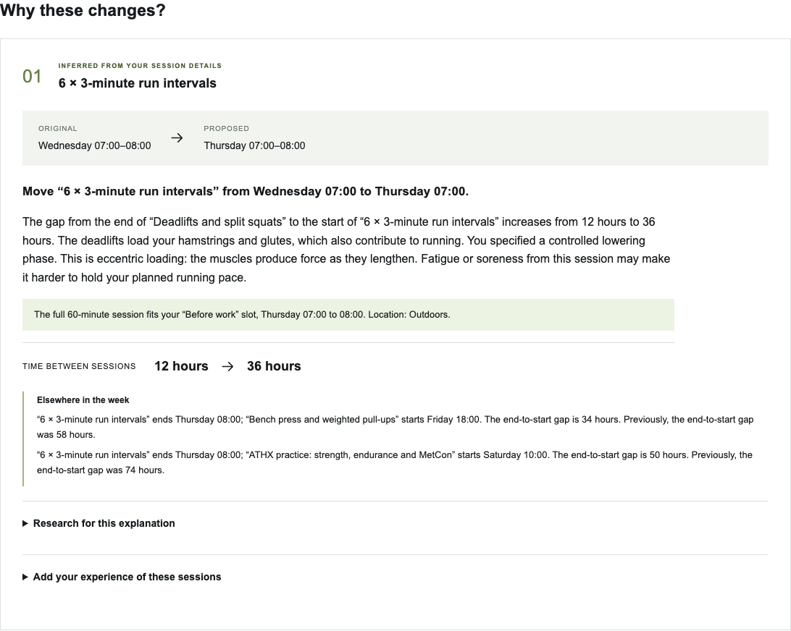
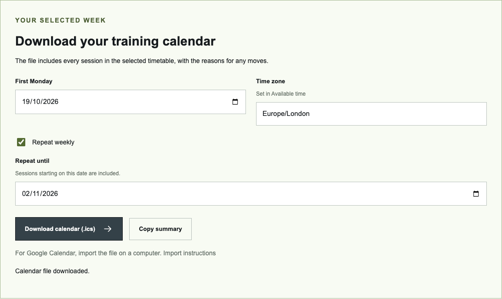
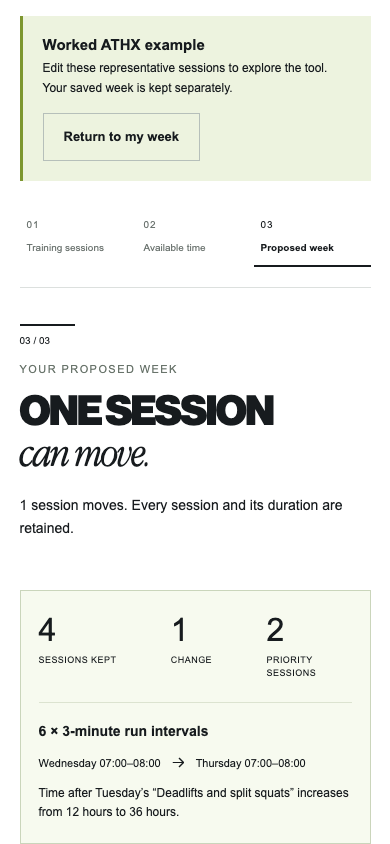
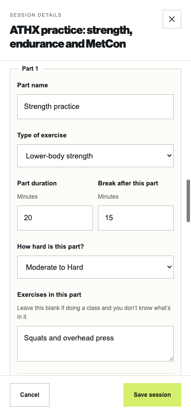
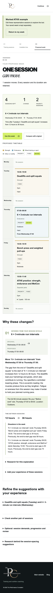

Changes applied for review
Stress Map walkthrough
Follow a populated ATHX training week from session entry to calendar download. The screenshots show the working tool. You can also open the editable example at any stage.
Introduction
See what the map will help you do
The opening example shows the run moving from Wednesday to Thursday, with another day between the run and Tuesday’s lifting.

01 / Training sessions
Name sessions and select your priorities
More than one session can be a priority. Fixed bookings keep their day and time; flexible sessions can use the alternatives you enter.

Session editor
Enter separate parts and breaks
Use the ATHX template as a representative training example, then edit the exercises, durations and breaks. The whole session stays together when moved.

02 / Available time
Add the times you could use
This example includes Thursday morning before work. Places and equipment are checked alongside the time needed for each session.

03 / Proposed week
Compare the revised timetable
The interval run moves to Thursday. Tuesday’s lifting, Friday’s upper-body session and Saturday’s ATHX practice remain in place.

Reasons for the changes
See why the session moved
The explanation names the exercises, shows the gap increasing from 12 to 36 hours, identifies the available slot and describes the changed intervals before the later sessions.

Selected timetable
Download the sessions to your calendar
Choose a start date. A typical week can repeat weekly until an end date. The file contains the sessions, locations, multipart details and reasons for each move.

Phone layout
Read the week one day at a time
The calendar uses a vertical day list on a narrow screen. Session details and the download controls remain available.




View the complete phone result
